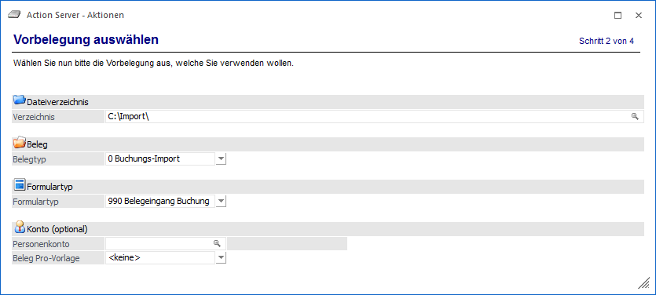

In diesem Eingabefeld kann das Verzeichnis, welches überwacht werden soll (bzw. in welches die PDF-Dateien abgestellt werden sollen) eingegeben, oder mittels Matchcode (Windows-Dateiexplorer) ausgewählt werden.
Ø Belegtyp
An dieser Stelle erfolgt die Definition, was in der WinLine erzeugt werden soll:
ü 0 - Buchungs-Import
Es wird
davon ausgegangen, dass das abgeholte Dokument im Anschluss als Buchungssatz
übergeben wird.
ü 1 - Batchbeleg
Wenn dieser
Eintrag gewählt wird, wird im Anschluss ein FAKT-Beleg erzeugt.
Ø Formulartyp
Hier kann ein Formulartyp eingetragen werden, welcher bei der Verzeichnisüberwachung bzw. dem automatischen Eingang genutzt werden soll.
Ø Konto (optional)
Die Eingabe eines fixen Personenkontos ist optional. Wenn jedoch eines angegeben wird, dann wird bei jeder PDF-Datei, welche aus dem Verzeichnis geholt wird, der Belegeingang mit eben diesem Kreditor erfasst. Wenn kein Konto angegeben ist, dann wird der Kreditor aus dem Beleg ausgelesen und übernommen.
Nach der Definition der Aktionsdetails erfolgt im nächsten Schritt die Angabe zu "Benutzer und Mandant".